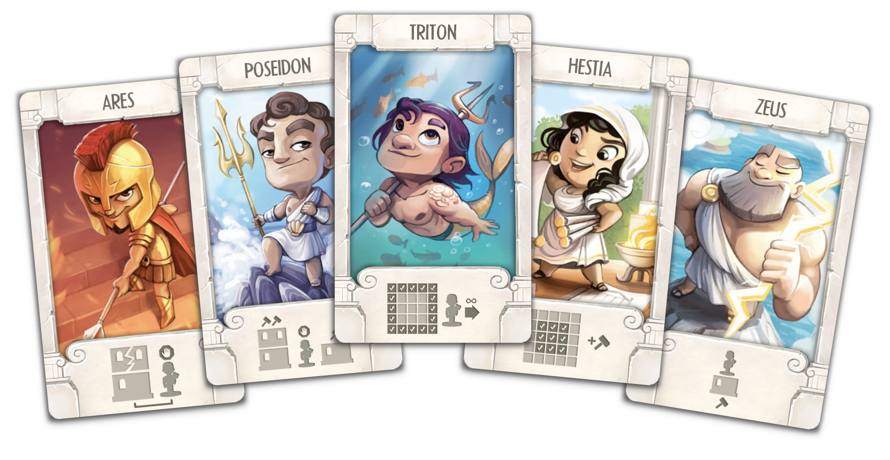

Santorini

The MenuCube© is an Augmented Reality Menu designed for Restaurants. It is far more powerful than a normal Menu-Card as it gives the customer the possibility to see the available dishes displayed in 3D and interact with them in real-time with his / her smartphone camera. In total there are five different actions the user can perform with the MenuCube and the additionally provided markers:
The idea was to augment the simple but also boring paper menu found in many restaurants by a tangible object to interact with. To make the application very easy to use as everybody should be able to understand it without explanation, the interface is kept very simple, yet powerful and easy to use. The external markers are all labelled clearly, showing the user with an additional icon for what interaction they can be used. in total the application exploits 12 markers.

With the help of a 3D printed phone stand, the user can place his phone on the table and use both hands to interact with the MenuCube and the markers to explore the different dishes, select and rate them while everything is displayed on his smartphone throughout the camera. The Field of View (FOV) must contain the display area and the MenuCube. By turning the cube the user can navigate through the different categories and dishes. In our example project we offer 17 dishes represented by 3D Models split into four different categories: starters, main courses, pizza, desserts. The „Select“-Marker can be used to enter into a category. The name of the category is shown in the top bar. To go back to the category selection, the user can tap on the top left corner of the UI. The user can also rate every dish with a 5-Star System by bringing the rating tag into the FOV. The distance between the rating marker and the display area determines the amount of stars the user wants to give to the dish. By bringing the "Select"-Marker in the FOV the rating is saved to the dish and displayed in the UI on the phone screen. By putting one of the "My choice"-Markers in the FOV next to the display area, a copy of the currently displayed dish is added to this marker. Herby the dish is saved to be displayed at any time the user focuses on that marker and additionally it’s added to the order. By flipping the MenuCube on the top side, the bottom marker is unveiled and the order is placed. A confirmation screen is shown and the user has the possibility to do another order by clicking on restart.